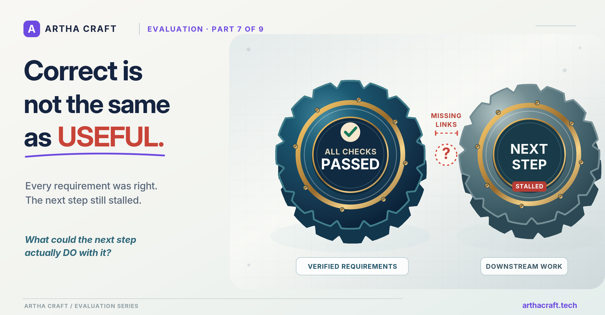

A claim summary
Accurate, and still leaving the adjuster to work out what is missing from the file, what is unusual and what to do next.
An output can pass every check and still leave the work undone. Value is in what the output carries for the next step. Evaluate that, and measure whether it helped.

One of our agents reads a business requirements document and produces numbered requirements. The first time it worked, the output looked right. Every requirement was there, numbered, worded cleanly and traceable to the source. By every check in this series so far, it passed.
It also added very little. A person still had to read every line and decide what kind of requirement it was, work out which requirements touched each other and what would happen when two of them were merged into one spec, and find the constraints and the decisions nobody had made yet. The list was correct, and the work was still waiting for someone to do it.
Value arrived when the output started carrying that work with it: each requirement classified by type; how requirements depend on, overlap with or conflict with each other; the guardrails and constraints that apply; and the decision points a person has to resolve before a spec can be written. The text itself barely changed; what changed was what the next step could do with it.
The same pattern shows up well beyond requirements. Correctness is measured against the source. Usefulness is measured against whoever uses the output next, a person or another system. For example:
Accurate, and still leaving the adjuster to work out what is missing from the file, what is unusual and what to do next.
Every clause quoted correctly, and no word on which clauses differ from the company's standard position.
Every result listed, and no word on which failures block a release.
Each is correct and leaves the real work to the reader. The useful version carries the attributes the next step needs, such as a type, a priority, a relationship, a flag or a decision to be made, and these are often exactly what a person would otherwise add by hand.
So "is it useful?" has a concrete test: can the next step proceed without going back to the source? If the adjuster, the lawyer, the release manager or the spec writer has to reopen the original and redo the analysis, the output was correct but not yet useful. The checks in Part 1 all measure the output against the source; this one measures it against whoever comes next.
In our case the next step was an agent and a person working together. The agent wrote the spec and a person verified it. The person decided which requirements belonged together in one spec, and the agent then worked out the guardrails and constraints that followed from putting them together. The decision stayed with the person, and the derivation went to the agent.
That meant the output had to serve two readers. The agent needed attributes it could act on: a type for each requirement, a stable identifier, explicit links to related requirements. The person needed to see the decisions clearly: which requirements might go together, why, and the evidence for each link.
So instead of asking "what would a good answer look like?", we write the contract for the output by asking whoever comes next: what do you need from this to do your part without going back to the source? Every attribute in the contract has a definition and a list of allowed values, and anything the next step does not use stays out.
People make the decisions. Agents derive what follows.
Every attribute is a claim that can be wrong, so each one you add brings value and also another place to fail:
The final test is downstream. Measure how often the next step had to go back to the source, how many attributes the person corrected during verification, how long verification took, and how much was reworked after the spec was written.
Evaluation guides recommend measuring what users actually do, through A/B tests after significant changes. [1] For internal workflows, our experience adds a cheaper signal: count how often the next step goes back to the source. These are better signals than asking people whether the AI helped. In a 2025 randomised trial, experienced open-source developers took 19 percent longer on tasks when AI tools were allowed, and afterwards still believed the tools had made them about 20 percent faster. [2] The researchers have since said those early-2025 results are out of date and published newer data. The point is not the number. It is the gap: how helpful AI feels and how helpful it is can point in opposite directions. Measure; do not ask.
Usefulness also has a face. When the output is a screen, the question is whether a person can use it without being taught: whether it explains itself, and whether it was designed around what the user is trying to do rather than around how it looks.
We use a usability agent for a first pass. It reviews each screen before any user sees it: is it self-explanatory, does it follow established usability practice, does it think from the user's point of view rather than the designer's. Established practice here has a long history; Nielsen and Molich's ten usability guidelines from the 1990s are still used as "rules of thumb." [3] An agent applying rules like these is a cheap first check, in the same spirit as Part 4's code checks.
The agent is still not a user. A model does not get confused, hurried or distracted, and it does not bring the habits of a real person's working day, so it finds what the rules can find and leaves the rest to real users. They do not have to be many: the long-standing advice is to test with a handful of users, fix what they found, and test again. [4] So the agent goes first, and people after it.
The next step is often another team or another system. Attributes should use the organisation's own types and identifiers, so they plug in without translation.
Clients pay for the analysis rather than the transcription, so the attributes are where the value is, and where an error costs the most.
Agent-to-agent handoffs need attributes a machine can act on: types, identifiers, explicit links. Prose leaves the next agent to guess.
Correct means it matches the source.
Useful means the next step can use it.
Only the next step can tell you which you have.
Write the contract with whoever comes next, check every attribute you add, and measure what happened downstream.
Jitander Chauhan